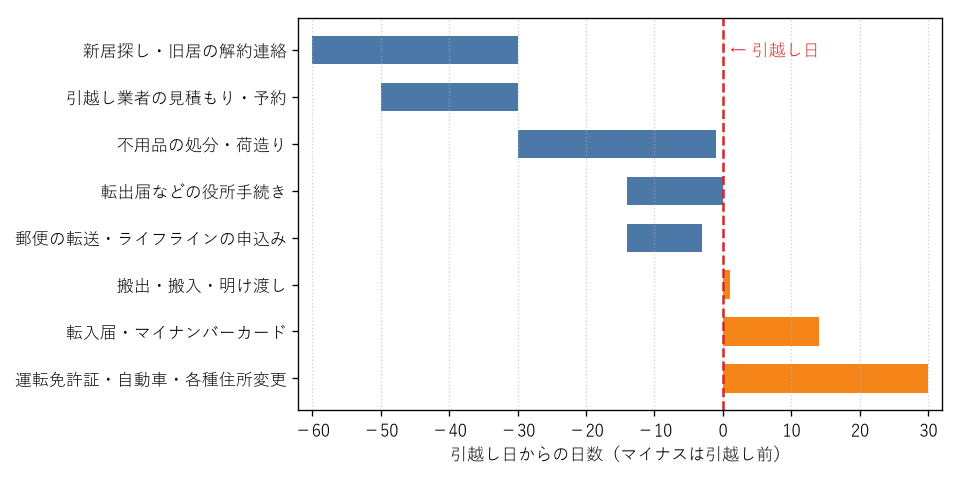
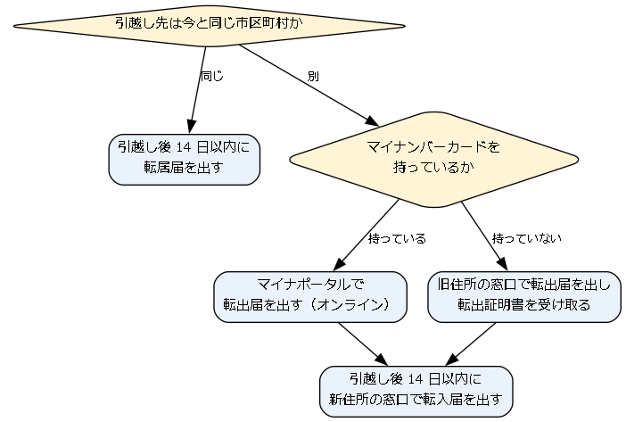

2. 引越しの全体の流れ
引越しの準備は、おおむね引越し日の 2 か月前から始め、引越し後 1 か月ほどで完了します。この章では、まず全体の流れをつかみ、次に期限が決まっている手続きを確認します。
2.1. 時期ごとの流れ
引越しの前後で行うことを、時期ごとに図に示します。青色の帯は引越し前に、橙色の帯は引越し当日以降に行う作業です。

図: 引越しの前後で行う作業の時期
各時期の主な作業は次のとおりです。
時期 |
主な作業 |
|---|---|
1〜2 か月前 |
新居探し、旧居の解約連絡、引越し業者の選定、学校・勤務先への連絡 |
2 週間〜前日 |
役所での転出の手続き、郵便の転送、電気・ガス・水道・インターネットの申込み、荷造り |
当日 |
荷物の搬出・搬入、旧居の明け渡し、ガスの開栓の立会い |
引越し後 |
役所での転入の手続き、運転免許証の住所変更、銀行などの住所変更 |
2.2. 住民票の手続きの選び方
引越しに伴う役所の手続きの中心は、住民票 の住所を移す手続きです。引越し先が今と同じ市区町村か、別の市区町村かによって、必要な届出が変わります。

図: 引越し先に応じた住民票の手続き
別の市区町村へ引越す場合は、旧住所で 転出届 を、新住所で 転入届 を出します。同じ市区町村の中で引越す場合は、転居届 だけで済みます。詳しくは 引越しの 2 週間前から前日までにすること と 引越し後にすること で説明します。
2.3. 期限が決まっている主な手続き
次の手続きには、法令などで期限が定められています。期限を過ぎないよう、早めに予定を立ててください。
手続き |
期限 |
提出先 |
|---|---|---|
転入届・転居届 |
新しい住所に住み始めた日から 14 日以内 |
新住所の市区町村役場 |
国民健康保険の加入 |
新しい住所に住み始めた日から 14 日以内 |
新住所の市区町村役場 |
児童手当の認定請求 |
転出予定日の翌日から 15 日以内 |
新住所の市区町村役場 |
自動車検査証の住所変更 |
住所の変更から 15 日以内 |
新住所を管轄する運輸支局など |
自動車の保管場所（車庫）の届出 |
保管場所の変更から 15 日以内 |
新しい保管場所を管轄する警察署 |
犬の登録の変更 |
引越しから 30 日以内 |
新住所の市区町村役場など |
警告
正当な理由がないまま転入届や転居届を期限内に出さなかった場合、住民基本台帳法により 5 万円以下の 過料 を科されることがあります。